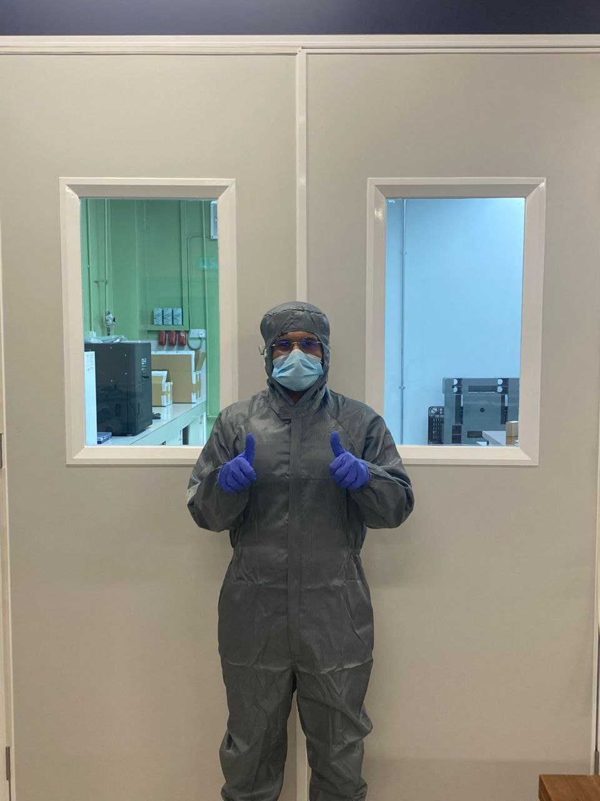

خلايا البيروفسكايت الشمسية من أسرع تقنيات الطاقة الشمسية تطوراً، لكن أداءها يتوقف على طبقة رقيقة جداً تنقل الإلكترونات إلى خارج الخلية. أدرس هذه الطبقة، المصنوعة من أكسيد القصدير (SnO₂)، ذرةً ذرة في الحاسوب وبيدي في المختبر، لأفهم كيف نجعلها تعمل أفضل.
أنا طالب ماجستير في علم وهندسة المواد بجامعة تونكو عبد الرحمن (UTAR) في ماليزيا. تتمحور أطروحتي حول طبقة نقل الإلكترونات (ETL) المصنوعة من أكسيد القصدير SnO₂ في الخلايا الشمسية البيروفسكايتية، وتحديدًا كيف تُغيّر إضافة كميات صغيرة من عناصر اللانثانيدات خصائصها الكهربائية وقدرتها على نقل الإلكترونات.
تتعامل معظم الأبحاث المنشورة مع طبقة نقل الإلكترونات كمكوّن واحد ضمن جهاز مكتمل. أما بحثي فيبدأ خطوة قبل ذلك: يحاول فهم مادة SnO₂ بحد ذاتها، سطحاً ومادة، قبل السؤال عن أدائها بعد دمجها. هذه فجوة لاحظتها، وأرى أنها تستحق الدراسة.
بدأ الأمر عندما سألني أحد الباحثين في مرحلة ما بعد الدكتوراه إن كان بإمكاني إجراء دراسة DFT للسطح الفاصل بين SnO₂ والبيروفسكايت. لم أكن حينها أعرف سوى نمذجة لب المواد (bulk) لا الأسطح، لكن بدا الأمر يستحق المحاولة، فتعلمت كيفية ذلك. ومن هناك انجذبت إلى دراسة SnO₂ بحد ذاتها: فكلما قرأت أكثر، ازداد وضوحًا أن كثيرًا من أبحاث البيروفسكايت تتعامل معها كأمر مسلَّم به، دون أن تدرسها فعليًا بحد ذاتها.
تُعدّ الخلايا الشمسية البيروفسكايتية من أكثر المجالات الواعدة في مجال الطاقة الكهروضوئية، لكن أداءها يعتمد على طبقات عديدة، لا على البيروفسكايت وحدها. حين تمتص طبقة البيروفسكايت الضوء تُطلق إلكترونات، وطبقة نقل الإلكترونات هي التي تنقلها إلى بقية الخلية. فإذا كانت هذه الطبقة غير فعالة أو غير مستقرة، تتأثر الخلية الشمسية بأكملها، مهما كانت جودة البيروفسكايت نفسها.
طريقة مفيدة لتخيل الأمر: تعمل طبقة نقل الإلكترونات كبوابة أحادية الاتجاه للإلكترونات، وجودة أداء هذه البوابة تعتمد على ما يحدث داخلها على المستوى الذري.
فهمُ SnO₂ على المستوى الذري (أين تستقر الذرات المضافة داخل البلّورة، وكيف تغيّر الروابط، وكيف يغيّر ذلك حركة الإلكترونات) هو ما يجعل منها مادةً مثيرة للاهتمام وتستحق الدراسة.
إضافة كميات صغيرة من عناصر اللانثانيدات إلى طبقة SnO₂ (ما يسميه العلماء «التطعيم» أو doping) لإصلاح عيوب سطحها وضبط قدرتها على توصيل الإلكترونات.
دراسة سطح SnO₂ مباشرةً، بدلًا من الاكتفاء بدراسته طبقةً مدمجة داخل خلية شمسية مكتملة.
أستخدم المحاكاة الحاسوبية بنظرية دالة الكثافة (DFT) مع برنامج LOBSTER الذي يقرأ الروابط بين الذرات، لأربط هذه الروابط بطريقة حركة الإلكترونات.
عندما يسقط الضوء على طبقة البيروفسكايت في الخلية الشمسية، يولّد إلكترونات تحتاج إلى الوصول إلى أحد الأقطاب الكهربائية لتتحول إلى تيار كهربائي قابل للاستخدام. تقع طبقة نقل الإلكترونات (ETL) بين البيروفسكايت وذلك القطب، فتسحب الإلكترونات بكفاءة مع منع حاملات الشحنة الأخرى في الخلية من التسرب في الاتجاه الخاطئ. وتُعدّ SnO₂ من أكثر المواد الواعدة لأداء هذه المهمة.
لأن ذراتها أكبر حجمًا بكثير من ذرات القصدير (Sn)، وتحمل شحنة مختلفة. وهذا التباين بالذات هو ما يجعلها جديرة بالدراسة: فبحسب موضعها داخل البنية، يمكن أن تغيّر سطح المادة وسهولة انتقال الإلكترونات عبرها.
تُحاكي نظرية دالة الكثافة (DFT) كيفية توزّع الإلكترونات حول كل ذرة. ويأخذ برنامج LOBSTER هذه المخرجات ويترجمها إلى معلومات عن الروابط الكيميائية. ومعاً يتيحان لي رؤية كيف تغيّر الذرة المضافة روابطها مع ما حولها، وهو أمر يصعب قياسه مباشرة في المختبر، ثم أربط ذلك بتغيّر السلوك الكهربائي للمادة.
تدرس معظم الأبحاث المنشورة طبقة نقل الإلكترونات بعد دمجها في الخلية الشمسية، ما يجعل من الصعب تمييز ما تفعله المادة نفسها عمّا يفعله بقية الخلية. أما دراسة السطح بمفرده فتعزل هذا السؤال. الثمن أن بعض تأثيرات الخلية الشمسية الفعلية لن تظهر في هذه المرحلة، وستأتي لاحقاً حين أدمج الطبقة في خلايا كاملة.
أطمح لأن أكون سفيراً لهذا المجال، لا مجرد باحث فيه. فكثير من الأبحاث في علم المواد تظل حبيسة الأوراق لا يقرؤها من خارج هذا التخصص (وأنا أؤمن بأن الجميع يستحقون معرفة ما نقوم به؛ أليس هذا هو جوهر البحث العلمي في الأساس؟). أرغب في مد جسر يربط بين تلك اللغة العلمية المعقدة وبين شروحات مبسطة بلغة واضحة يسهل على الجميع استيعابها. من هذا المنطلق عملت هذا الموقع كنقطة بداية؛ إذ سأقدم فيه مقالات حول مادة (SnO₂)، وآليات عمل كل من (DFT) و(LOBSTER)، وما تحتاجه الخلايا الشمسية من نوع «بيروفسكايت» (perovskite) لتطوير أدائها. وبجانب البحث العلمي، أود أن أنقل لكم صورة واقعية عن الحياة داخل المختبر وأشارككم بعضاً من القصص والتجارب التي نعيشها في هذا المسار :)

رسالة الماجستير (قيد الإعداد)، جامعة UTAR: كيف تغيّر كلوريدات اللانثانيدات سطح طبقة نقل الإلكترونات SnO₂ وخصائصها الكهربائية في الخلايا الشمسية البيروفسكايتية، بالجمع بين محاكاة DFT وLOBSTER والتجارب في المختبر.
المقالات التي تشرح العلم تنتهي بقائمة المصادر التي اعتمدت عليها، لتتحقق منها بنفسك.
آخر ما نشرت، الأحدث أولاً:
تابع المقالات الجديدة عبر RSS. آخر تحديث: أكتوبر 2026.
عندك سؤال عن مقال أو عن الخلايا الشمسية؟ أرسله لي وسأجيب عنه، وقد يصبح السؤال الجيد موضوع المقال القادم.
Universiti Tunku Abdul Rahman (UTAR)